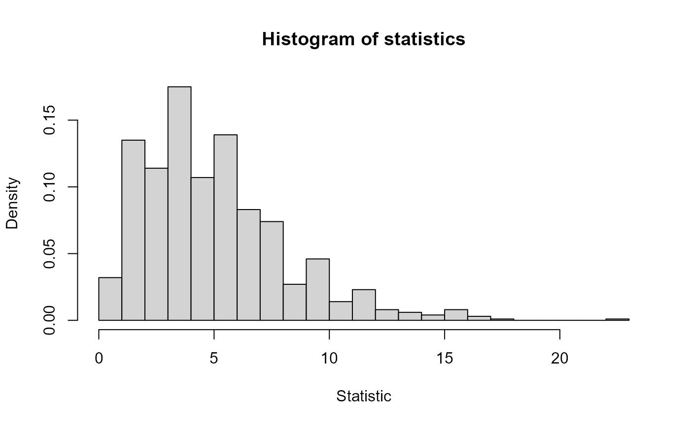
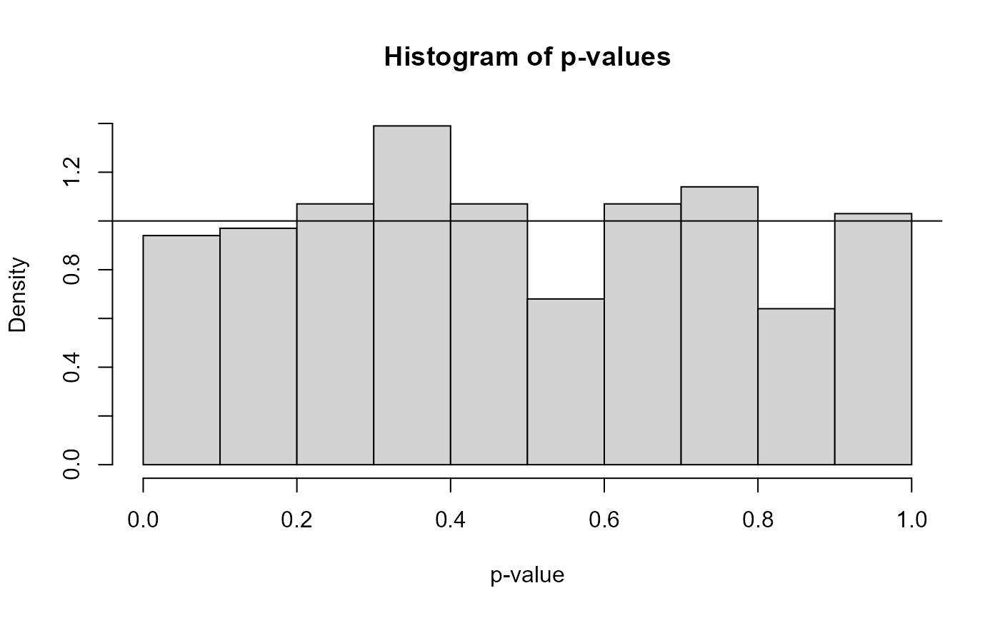

Applies a hypothesis test to simulated samples.
rephtest(n = 30, nsim = 1000, test, rand.gen = runif, ...)
# S3 method for rhtest
summary(object, alpha = c(0.01, 0.05, 0.1, 0.25, 0.5), ...)
# S3 method for rhtest
plot(x, y = 1:3, ask = length(y) > 1 && dev.interactive(), ...)sample size.
number of simulations.
function (or function name) which performs an one-sample test.
optional: function to generate the samples.
arguments to be passed to other functions (for instance to test())
or methods.
an object for which a summary is desired.
numeric vector of probabilities (significance levels).
an object with class "rhtest".
if a subset of the plots is required,
specify a subset of the numbers 1:3.
logical; if TRUE, the user is asked before each plot,
see graphics::par(ask=.).
rephtest() returns a list with class "rhtest" containing the following components:
the values of the test statistic.
the p-values for the test.
with attributes:
a character string indicating the type of test performed.
a character string indicating the distribution of the test statistic.
the parameters of the distribution of the test statistic.
set.rng(543210, "lcg", a = 2^16 + 3, c = 0, m = 2^31) # set.seed(543210)
res <- rephtest(n = 30, test = chisq.cont.test, rand.gen = rng,
distribution = "unif", output = FALSE, nestpar = 0)
str(res)
#> List of 2
#> $ statistics: num [1:1000] 5.2 6.8 12.4 0.8 5.6 7.6 6.4 9.6 5.2 3.2 ...
#> $ p.values : num [1:1000] 0.392 0.2359 0.0297 0.977 0.3471 ...
#> - attr(*, "class")= chr "rhtest"
#> - attr(*, "method")= chr "Pearson's Chi-squared test"
#> - attr(*, "names.stat")= chr "X-squared"
#> - attr(*, "parameter")= Named num 5
#> ..- attr(*, "names")= chr "df"
summary(res)
#> Proportion of rejections:
#> 1% 5% 10% 25% 50%
#> 0.013 0.054 0.094 0.254 0.544
plot(res)

